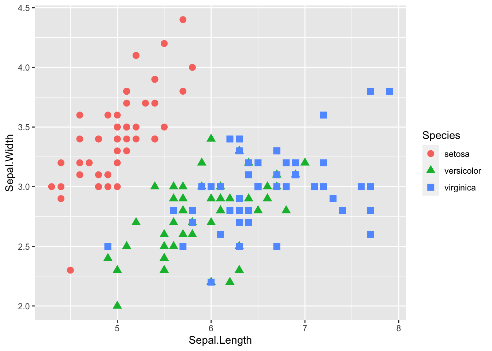
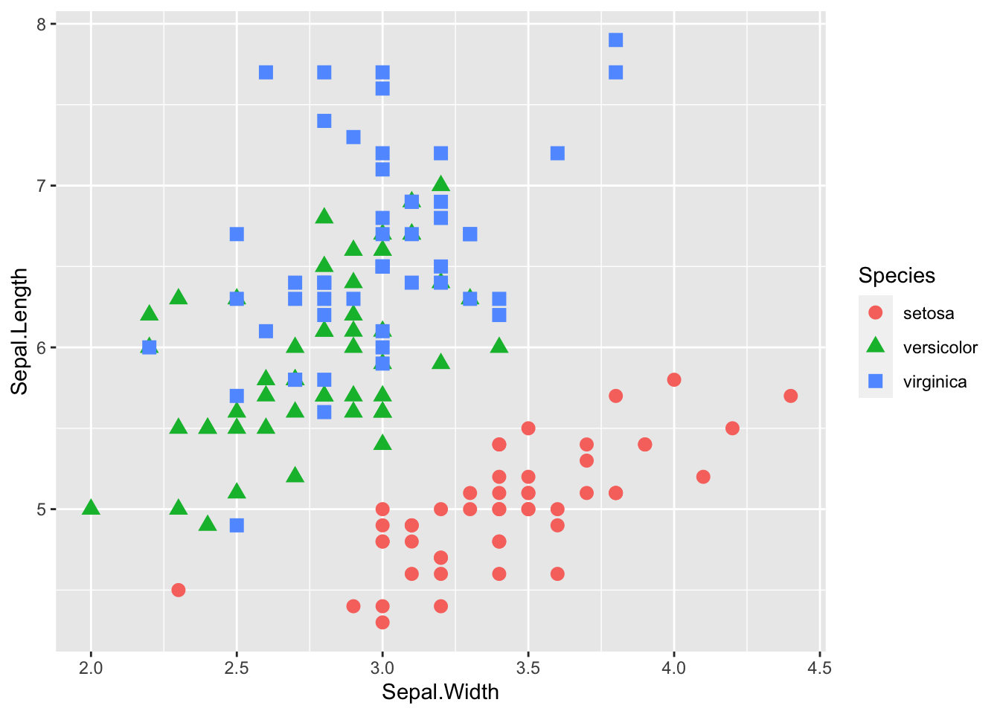
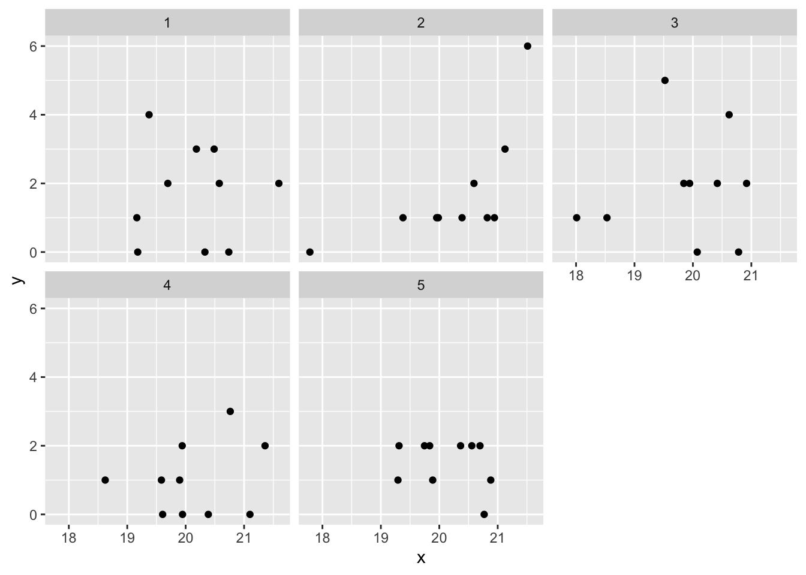

Chapter 13 マルチレベルモデル
一般化線形モデルを拡張し、個人差や集団差を扱うモデルについて学ぶ。
13.2 個人差や集団差の問題
以下では、Rにデフォルトで入っている iris データを例として使う。
## Sepal.Length Sepal.Width Petal.Length Petal.Width Species
## 1 5.1 3.5 1.4 0.2 setosa
## 2 4.9 3.0 1.4 0.2 setosa
## 3 4.7 3.2 1.3 0.2 setosa
## 4 4.6 3.1 1.5 0.2 setosa
## 5 5.0 3.6 1.4 0.2 setosa
## 6 5.4 3.9 1.7 0.4 setosaまず、がくの長さ（Sepal.Length）とがくの幅（Sepal.Width）の関係を散布図で示してみよう。
graph_1 = ggplot2::ggplot() +
ggplot2::geom_point(data=iris, aes(x=Sepal.Length, y=Sepal.Width),size = 3)
graph_1
まず、lm()を使って、がくの長さを応答変数、がくの幅を予測変数とした線形モデルで係数を推定する。
##
## Call:
## lm(formula = Sepal.Length ~ 1 + Sepal.Width, data = iris)
##
## Residuals:
## Min 1Q Median 3Q Max
## -1.5561 -0.6333 -0.1120 0.5579 2.2226
##
## Coefficients:
## Estimate Std. Error t value Pr(>|t|)
## (Intercept) 6.5262 0.4789 13.63 <2e-16 ***
## Sepal.Width -0.2234 0.1551 -1.44 0.152
## ---
## Signif. codes: 0 '***' 0.001 '**' 0.01 '*' 0.05 '.' 0.1 ' ' 1
##
## Residual standard error: 0.8251 on 148 degrees of freedom
## Multiple R-squared: 0.01382, Adjusted R-squared: 0.007159
## F-statistic: 2.074 on 1 and 148 DF, p-value: 0.1519推定された切片及び傾きの値から予測直線を引くと、以下のようになる。
graph_lm = ggplot2::ggplot()+
ggplot2::geom_point(data = iris, aes(x = Sepal.Width, y = Sepal.Length), size = 3) +
ggplot2::geom_smooth(data = iris, aes(x = Sepal.Width, y = Sepal.Length), formula = y~ 1 + x, method = "lm", se = FALSE)
graph_lm
がくの幅（Sepal.Width）は、がくの長さに対して負の影響を持っているように見える。
では、この散布図を種（Species）ごとに色わけして示してみる。
graph_2 = ggplot2::ggplot() +
ggplot2::geom_point(data = iris, aes(x = Sepal.Width, y = Sepal.Length, color = Species, shape = Species), size = 3)
graph_2
種を無視して検討したところ、がくの幅と長さの間には負の関係があるようにみえたが、種ごとに分けてみると「がくの長さが大きくなるほど、がくの幅が大きくなる」関係にあるように見える。
このあやめのデータのように、いくつかのデータが同じグループに属している構造の場合、グループの影響を統制しないと誤った結論を招いてしまう恐れがある。それらのデータ間には、統計的独立性が保証されていないためである。つまり、同じ種同士のものは似た傾向にある可能性が高い（データ間で相関が存在する）。
独立(independence)とは、各データが他のデータに影響されないという意味である。これまで学んできた確率分布では、独立同分布(independent and identically distributed: i.i.d.)が前提とされている。例えば、コインを数回投げて表が出る回数は二項分布に従うが、表が出るかどうかは前の試行に影響されることはない（前回表が出たら、次も表が出やすいということはありえないという前提を置く）。
しかし、現実のデータでは、データ間の相関などにより、事象の独立性が保たれていないケースもありえる。その場合、統計的独立性を前提とした解析を行うと、上の例のように誤った結論を導いてしまう恐れがある。
この例に限らず、階層構造を持つデータや繰り返し測定データにも、同じことがいえる。例えば、学校ごとに学力テストを行った場合、同じ学校の生徒たちは成績が似通っている可能性がある（上位校の生徒は他の学校と比べて成績が良いなど）。同一参加者に複数の実験条件に参加してもらった場合、その参加者のデータは似たような傾向になる可能性も考えられる。
このようなデータに対して、個人や集団の影響を考慮した統計モデルとして、マルチレベルモデル(multilevel model)が提案されている。
マルチレベルモデルは、「階層モデル(hierarchical model)」、「混合モデル(mixied model)」など、色々な呼ばれ方がされている。
13.3 マルチレベルモデルの概要
マルチレベルモデルでは、予測変数が応答変数に及ぼす効果だけではなく、個人や集団の効果を扱う。予測変数そのものの効果は固定効果（fixed effect）と呼ばれ、個人や集団ごとの効果はランダム効果（random effect）と呼ばれて区別される。前章まで扱ってきた、一般化線形モデルは固定効果のみを含むモデルである。
例として、 繰り返し測定されたデータを扱う。以下のプログラムを実行して、サンプルデータexampleを作ろう。
set.seed(1)
example = data.frame(i = 1:6, j = c(1, 1, 2, 2, 3, 3), y = round(rnorm(6), 2), x = rep(c(0, 1),3) )
example## i j y x
## 1 1 1 -0.63 0
## 2 2 1 0.18 1
## 3 3 2 -0.84 0
## 4 4 2 1.60 1
## 5 5 3 0.33 0
## 6 6 3 -0.82 1\(i\)がデータを意味する番号（何行目か）、\(j\)を個人もしくはグループを意味する番号とする。例えば、個人\(j\)が\(x=0\)の場合と\(x=1\)の場合の2回\(y\)を測定している、あるいは同じ集団\(j\)から2人が選ばれてそれぞれの人について\(y\)が測定された、といったケースが当てはまる。
一般化線形モデルの線形予測子は、以下のような数式で表現できた。
\[ \mu_{i} = \alpha + \beta x_{i} \tag{1}\\ y_{i} \sim \text{Normal}(\mu_{i}, \sigma) \]
\(\alpha\)が切片、\(\beta\)が予測変数\(x\)に係る傾きであった。
これに対し、マルチレベルモデルでは、以下のように線形予測子に\(\alpha_{j}\)が加わる。
\[ \mu_{i} = \alpha_{0} + \beta x_{i} + \alpha_{j} \tag{2} \\ \alpha_{j} \sim \text{Normal}(0, \sigma_{\alpha})\\ y_{i} \sim \text{Normal}(\mu_{i}, \sigma) \]
すべての個人に共通して影響する切片\(\alpha_{0}\)に加え、個人ないしはグループごとに異なる切片\(\alpha_{j}\)を考慮する。
更に、\(\alpha_{j} \sim \text{Normal}(0, \sigma_{\alpha})\)にあるように、個人ごとの切片\(\alpha_{j}\)が「平均をゼロ、\(\sigma_{\alpha}\)を標準偏差とする正規分布から生成される」という仮定を置く。
これにより、同じグループに属するデータ（例えば\(j=1\)）には同じ効果（\(\alpha_{1}\)）が共通して係ることを表現できる。
傾きを\(\beta_{ j}\)にする、すなわち個人ごとに予測変数に係る効果が異なるという前提を置くこともできる。しかし、実際に傾きをランダム効果としたモデルは複雑で推定するのは困難であるため（最尤推定法では解が求まらない場合がある）、多くの場合、個人差の影響（ランダム効果）は切片のみを考慮したモデルで表現されることが多い。ランダム傾きを含むマルチレベルモデルを扱う際には、ベイズ統計の手法が必要になる。
13.4 Rでのマルチレベルモデル
Rでマルチレベルモデルで解析を行うためには、外部パッケージが必要になる。様々なパッケージがあるが、lme4パッケージが扱いやすい。以下では、lme4パッケージに含まれるglmer()を使った解析の例を示す。
基本的に、lm()関数と似た表記で使うことができる。ランダム切片は、(1|グループを意味する変数名)のかたちで線形予測子に入れる。
model_lmm = lme4::lmer(data= iris, Sepal.Length ~ 1 + Sepal.Width + (1|Species)) #(1|Species)を加える
summary(model_lmm)## Linear mixed model fit by REML ['lmerMod']
## Formula: Sepal.Length ~ 1 + Sepal.Width + (1 | Species)
## Data: iris
##
## REML criterion at convergence: 194.6
##
## Scaled residuals:
## Min 1Q Median 3Q Max
## -2.9846 -0.5842 -0.1182 0.4422 3.2267
##
## Random effects:
## Groups Name Variance Std.Dev.
## Species (Intercept) 1.0198 1.010
## Residual 0.1918 0.438
## Number of obs: 150, groups: Species, 3
##
## Fixed effects:
## Estimate Std. Error t value
## (Intercept) 3.4062 0.6683 5.097
## Sepal.Width 0.7972 0.1062 7.506
##
## Correlation of Fixed Effects:
## (Intr)
## Sepal.Width -0.486出力結果を見てみると、Fixed effectsという部分がある。ここに、固定効果の推定結果が表示される。見方は一般化線形モデルのときと同じである。切片(intercept)と予測変数に係る傾きの係数の推定結果が表示されている（個体差にかかわらず、すべての個体共通に係る予測変数の効果）。
がくの幅（Sepal.Width)の回帰係数（Estimate）を見ると、lm()での推定結果とは逆に、プラスになっている。やはり、グループの違いを統制すると、実際にはがくの幅が大きくなるほど、がくの長さも大きくなる関係にあることが、lmer()による推定結果からわかる。
lmer()では、デフォルトで係数のp値は表示されない。p値も出したいならば、lmerTest()パッケージをインストールしておく必要がある。
## Linear mixed model fit by REML. t-tests use Satterthwaite's method [
## lmerModLmerTest]
## Formula: Sepal.Length ~ 1 + Sepal.Width + (1 | Species)
## Data: iris
##
## REML criterion at convergence: 194.6
##
## Scaled residuals:
## Min 1Q Median 3Q Max
## -2.9846 -0.5842 -0.1182 0.4422 3.2267
##
## Random effects:
## Groups Name Variance Std.Dev.
## Species (Intercept) 1.0198 1.010
## Residual 0.1918 0.438
## Number of obs: 150, groups: Species, 3
##
## Fixed effects:
## Estimate Std. Error df t value Pr(>|t|)
## (Intercept) 3.4062 0.6683 3.4050 5.097 0.0107 *
## Sepal.Width 0.7972 0.1062 146.6648 7.506 5.45e-12 ***
## ---
## Signif. codes: 0 '***' 0.001 '**' 0.01 '*' 0.05 '.' 0.1 ' ' 1
##
## Correlation of Fixed Effects:
## (Intr)
## Sepal.Width -0.486他には、直接p値を計算する方法ではないが、信頼区間を算出して有意かどうか（信頼区間にゼロが含まれていないか）を判断するという手もある。
model_lmm = lmer(data= iris, Sepal.Length ~ 1 + Sepal.Width + (1|Species))
confint(model_lmm, level = 0.95) #confintで信頼区間を計算する。デフォルトで95%信頼区間が出力される（levelで範囲を指定可能）。## 2.5 % 97.5 %
## .sig01 0.4320405 2.4380677
## .sigma 0.3909640 0.4915558
## (Intercept) 1.9780097 4.8131087
## Sepal.Width 0.5844733 1.003019113.5 正規分布以外を扱う例
13.5.1 ロジスティック回帰
応答変数が正規分布以外に従う場合のマルチレベルモデルについても見ていこう。
lme4パッケージのglmer()で、正規分布以外の確率分布を指定したマルチレベルモデルの解析を行うことができる。以下では、ランダム効果を加えたロジスティック回帰分析の例を示す。
まず、以下のプログラムを実行してサンプルデータdata_sampleを作ろう。
x1 = c(1.0, 2.0, 3.0, 4.2, 5.1, 3.1, 4.2, 5.0, 6.1, 7.0, 5.3, 6.0, 7.0, 8.1, 9.0)
y1 = c(0, 0, 1, 1, 1, 0, 0, 0, 0, 1, 0, 1, 1, 1, 1)
ID = c(rep("a",5),rep("b",5),rep("c",5))
data_sample = data.frame(ID, x1, y1)
head(data_sample)## ID x1 y1
## 1 a 1.0 0
## 2 a 2.0 0
## 3 a 3.0 1
## 4 a 4.2 1
## 5 a 5.1 1
## 6 b 3.1 0x1を予測変数（量的変数）、y1を応答変数（0か1のいずれかを取る）、IDが個体を示す変数とする。1つの個体からx1を変えて5回、y1が計測がされた実験をイメージしてほしい。
予測変数と応答変数の関係に、個体特有の効果を加えたモデルは以下となる。
\[ q = \frac{\exp(\alpha_{0} + \beta x + \alpha_{j})}{1+\exp(\alpha_{0} + \beta x + \alpha_{j})} \tag{3} \\ \alpha_{j} \sim \text{Normal}(0, \sigma_{\alpha})\\ y \sim \text{Binomial}(1, q) \]
線形予測子をロジット（逆ロジット）変換して、\(y=1\)が生じる確率\(q\)を求める。応答変数\(y\)は、\(q\)をパラメータとする二項分布から生成される。これらの点は、一般化線形モデルで学んだ。
更に、線形予測子に、ランダム切片\(\alpha_{j}\)を加えた。\(\alpha_{j}\)は、平均ゼロ、標準偏差\(\sigma_{\alpha}\)の正規分布に従って生成されるとする。
正規分布以外の確率分布を扱うマルチレベルは、Rではlme4パッケージのglmer()で扱うことができる。さっきのlmer()と同じ要領で、線形予測子に個体を識別する変数（ID）を加える。以下のように、(1|ID)というかたちで入れる。
あとは、確率分布とリンク関数を指定する。指定の仕方は、glm()のときと同じ要領である。確率分布はbinomial（二項分布）、リンク関数はlogit（ロジット関数）を指定する。リンク関数の指定は省略しても構わない（二項分布を指定すれば、デフォルトでロジット関数を選択してくれる）。
model_logistic_glmm = lme4::glmer(data = data_sample, y1 ~ 1 + x1 + (1|ID), family = binomial(link="logit"))
summary(model_logistic_glmm)## Generalized linear mixed model fit by maximum likelihood (Laplace
## Approximation) [glmerMod]
## Family: binomial ( logit )
## Formula: y1 ~ 1 + x1 + (1 | ID)
## Data: data_sample
##
## AIC BIC logLik deviance df.resid
## 14.3 16.4 -4.2 8.3 12
##
## Scaled residuals:
## Min 1Q Median 3Q Max
## -0.01928 0.00000 0.00000 0.00000 0.04031
##
## Random effects:
## Groups Name Variance Std.Dev.
## ID (Intercept) 67795 260.4
## Number of obs: 15, groups: ID, 3
##
## Fixed effects:
## Estimate Std. Error z value Pr(>|z|)
## (Intercept) -220.575 31.594 -6.981 2.92e-12 ***
## x1 38.996 5.572 6.998 2.60e-12 ***
## ---
## Signif. codes: 0 '***' 0.001 '**' 0.01 '*' 0.05 '.' 0.1 ' ' 1
##
## Correlation of Fixed Effects:
## (Intr)
## x1 -0.99013.5.2 ポアソン回帰
同じく、lme4パッケージのglmer()を使う。確率分布はpoisson（ポアソン分布）、リンク関数はlog（対数）を指定する。リンク関数の指定は省略しても構わない（ポアソン分布を指定すれば、デフォルトで対数関数を選択してくれる）。
set.seed(1)
alpha = 0.5
beta = 0.2
x = rnorm(n=50, mean = 0, sd = 1)
alpha_0 = rnorm(n=5, mean = 0, sd = 0.2)
lambda_1 = exp(alpha + beta * x[1:10] + alpha_0[1])
lambda_2 = exp(alpha + beta * x[11:20] + alpha_0[2])
lambda_3 = exp(alpha + beta * x[21:30] + alpha_0[3])
lambda_4 = exp(alpha + beta * x[31:40] + alpha_0[4])
lambda_5 = exp(alpha + beta * x[41:50] + alpha_0[5])
y_1 = rpois(n = 10, lambda_1)
y_2 = rpois(n = 10, lambda_2)
y_3 = rpois(n = 10, lambda_3)
y_4 = rpois(n = 10, lambda_4)
y_5 = rpois(n = 10, lambda_5)
dat = data.frame(y = c(y_1, y_2, y_3, y_4, y_5),
x = x + 20,
ID = sort(rep(1:5, 10)))
dat$x_std = dat$x - mean(dat$x)
ggplot2::ggplot() +
ggplot2::geom_point(data = dat, aes(x = x, y = y)) +
ggplot2::facet_wrap(vars(factor(ID)))
## boundary (singular) fit: see help('isSingular')## Generalized linear mixed model fit by maximum likelihood (Laplace
## Approximation) [glmerMod]
## Family: poisson ( log )
## Formula: y ~ 1 + x_std + (1 | ID)
## Data: dat
##
## AIC BIC logLik deviance df.resid
## 161.4 167.2 -77.7 155.4 47
##
## Scaled residuals:
## Min 1Q Median 3Q Max
## -1.4045 -0.6295 -0.0597 0.4675 3.2093
##
## Random effects:
## Groups Name Variance Std.Dev.
## ID (Intercept) 0 0
## Number of obs: 50, groups: ID, 5
##
## Fixed effects:
## Estimate Std. Error z value Pr(>|z|)
## (Intercept) 0.4235 0.1157 3.660 0.000253 ***
## x_std 0.2560 0.1474 1.737 0.082439 .
## ---
## Signif. codes: 0 '***' 0.001 '**' 0.01 '*' 0.05 '.' 0.1 ' ' 1
##
## Correlation of Fixed Effects:
## (Intr)
## x_std -0.206
## optimizer (Nelder_Mead) convergence code: 0 (OK)
## boundary (singular) fit: see help('isSingular')13.5.3 マルチレベルモデルによる過分散への対処
ポアソン分布の理論的な分散よりも実際のデータの分散が大きい「過分散」がある場合には、ポアソン回帰の結果が信頼できなくなる問題があった。
#サンプルデータの作成
set.seed(1)
N= 50
x = rnorm(n=N, mean = 2, sd = 1)
e = rnorm(n=N, mean = 0, sd = 1)
lambda = exp(0.01 + 0.1*x + e)
y = rpois(n=N, lambda = lambda)
dat_dis = data.frame(y=y, x=x)
result_dis = glm(data = dat_dis, y ~ 1 + x, family = poisson(link = "log"))
summary(result_dis)##
## Call:
## glm(formula = y ~ 1 + x, family = poisson(link = "log"), data = dat_dis)
##
## Coefficients:
## Estimate Std. Error z value Pr(>|z|)
## (Intercept) -0.1417 0.3139 -0.451 0.65177
## x 0.4393 0.1268 3.465 0.00053 ***
## ---
## Signif. codes: 0 '***' 0.001 '**' 0.01 '*' 0.05 '.' 0.1 ' ' 1
##
## (Dispersion parameter for poisson family taken to be 1)
##
## Null deviance: 166.37 on 49 degrees of freedom
## Residual deviance: 153.39 on 48 degrees of freedom
## AIC: 260.41
##
## Number of Fisher Scoring iterations: 6## # Overdispersion test
##
## dispersion ratio = 4.048
## Pearson's Chi-Squared = 194.291
## p-value = < 0.001## Overdispersion detected.マルチレベルモデルでは、過分散の問題にも対処することができる。
\[ \lambda_{i} = \alpha_{0} + \beta x_{i} + \alpha_{i} \tag{2} \\ \alpha_{i} \sim \text{Normal}(0, \sigma_{\alpha})\\ y_{i} \sim \text{Poisson}(\lambda_{i}) \] 観測値ごとのランダム切片（\(\alpha_{i}\)）を加えて、余分な分散を別のパラメータ（\(\sigma_{\alpha}\)）で表現する。
## y x ID
## 1 1 1.373546 1
## 2 0 2.183643 2
## 3 1 1.164371 3
## 4 0 3.595281 4
## 5 3 2.329508 5
## 6 8 1.179532 6result_poisson_glmm = lme4::glmer(data = dat_dis, y ~ 1 + x + (1|ID), family = poisson(link = "log"))
summary(result_poisson_glmm)## Generalized linear mixed model fit by maximum likelihood (Laplace
## Approximation) [glmerMod]
## Family: poisson ( log )
## Formula: y ~ 1 + x + (1 | ID)
## Data: dat_dis
##
## AIC BIC logLik deviance df.resid
## 202.3 208.0 -98.1 196.3 47
##
## Scaled residuals:
## Min 1Q Median 3Q Max
## -0.9658 -0.2773 -0.1231 0.3444 0.8207
##
## Random effects:
## Groups Name Variance Std.Dev.
## ID (Intercept) 0.7871 0.8872
## Number of obs: 50, groups: ID, 50
##
## Fixed effects:
## Estimate Std. Error z value Pr(>|z|)
## (Intercept) -0.01303 0.47791 -0.027 0.978
## x 0.18846 0.20904 0.902 0.367
##
## Correlation of Fixed Effects:
## (Intr)
## x -0.921ランダム切片を入れない通常のポアソン回帰では予測変数xはyに対して有意な効果を有していたが、観測値ごとのランダム切片を加えたマルチレベルモデルでは、xの係数が小さくなり有意な効果も見られなくなった。通常のポアソン回帰では過分散の影響でxの効果を過剰に評価していたことが伺える。余計な分散をランダム切片に吸収させることで、予測変数が持つ効果を推定することができた。
確認問題
問１
carパッケージに入っているカナダにおける職業の威信度に関する調査データPrestigeを使う。102業種に関する調査結果が入っている。
## education income women prestige census type
## gov.administrators 13.11 12351 11.16 68.8 1113 prof
## general.managers 12.26 25879 4.02 69.1 1130 prof
## accountants 12.77 9271 15.70 63.4 1171 prof
## purchasing.officers 11.42 8865 9.11 56.8 1175 prof
## chemists 14.62 8403 11.68 73.5 2111 prof
## physicists 15.64 11030 5.13 77.6 2113 profprestigeを応答変数、education, income及び womenを予測変数、typeをランダム効果（切片）としたマルチレベルモデルで解析せよ。応答変数が従う確率分布は、正規分布を用いるものとする。
各予測変数が応答変数に及ぼす効果について述べよ（その予測変数が1単位変化すると、応答変数がどう変化するか）。
なお、変数の意味は以下の通りである。
prestige：職業威信度（値が高いほど威信度が高い）
education：在職者の平均教育年数
income：平均所得（単位はドル）
women：女性の割合
type：職業のカテゴリ（bc=ブルーカラー、wc=ホワイトカラー、prof=専門職）
ヒント：正規分布を扱うマルチレベルの場合は、lme4パッケージのlmer()を使えば良い。なお、出力時にメッセージが出ても無視して良い（中心化せよという命令だが、無視して良い）。